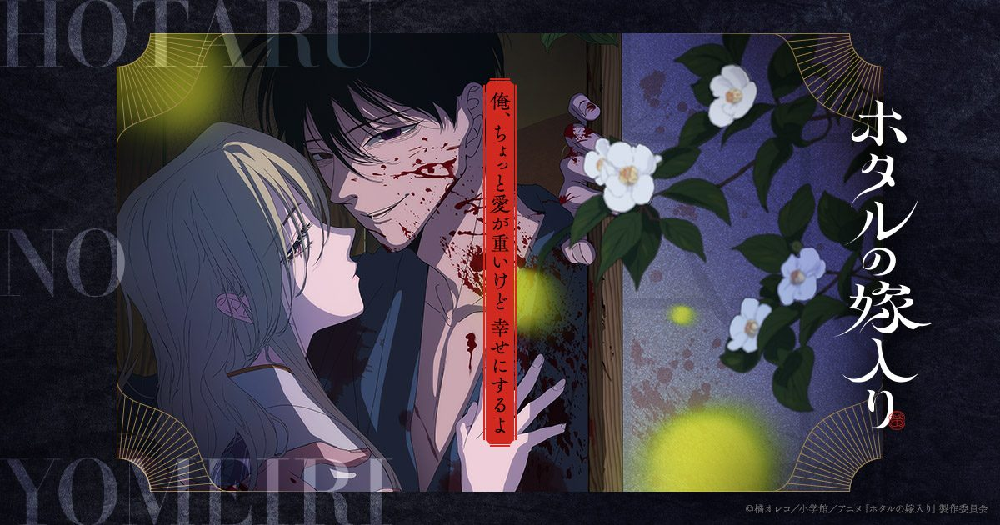

2026-09-02 · 动漫深读
今年十月被少年漫大战塞满了：JoJo 飙马野郎、黑五叶草、东京复仇者终章、药屋少女 S3……在一片"开打"的声浪里，有部片子走的是完全相反的方向。10 月 9 日，Fuji TV 的 Noitamina 深夜档要开播《Hotaru no Yomeiri》（萤火虫婚礼）——讲的是一个病弱贵族千金，向派来杀她的刺客求婚，而那个刺客把婚誓当了真。更反差的是，做它的居然是《JoJo》《Fire Force》的 David Production。这片子凭什么值得从一堆热血番里单拎出来讲？我们拆给你看。

8 月 2 日第二支 PV 把档期钉死：10 月 9 日起，每周五 23:30 的 Noitamina 黄金深夜档，Crunchyroll 全球同步。第一集其实更早——7 月 4 日就在 Anime Expo 首映过了，9 月还有日本先行上映。换句话说，它在开播前就已经把"最挑剔的那批观众"先喂了一口。
Noitamina 是什么分量？它是日本最老牌、也最"成人向 / 调性独特"的深夜动画档，从《蜂蜜与四叶草》《更衣人偶坠入爱河》到《国王排名》，走的从来不是少年漫主战场。在 2026 秋季这种"热血过载"的档期里，一部暗黑罗曼史能拿到这块招牌的首播位，本身就是一种信号：制作委员会对它的调性很有把握。
原作是 Tachibana Oreco 在 Shogakukan 的 MangaONE / Ura Sunday 上从 2023 年 1 月连载到 2026 年 2 月的作品，累计发行 450 万部，并拿下 Digital Comic Awards 2024 大奖、全国书店员推荐漫画第一名、AnimeJapan 2025「最想动画化」第三名。这个成绩放在女性向 / 恋爱漫画里，是实打实的头部。
故事设定在明治时代：伯爵千金 Satoko Kirigaya（ Lynn 配音）隐瞒先天性心脏病，被家族当作政治联姻的筹码；派来刺杀她的刺客 Shinpei Goto（内山昂辉配音）反被她以"一见钟情"为由求婚，而 Shinpei 居然认真把婚誓当了真，两人就此私奔。核心张力非常清楚——一个随时可能停跳的心脏，和一个把"守护你"刻进骨子里的杀手，这种"危险又温柔"的反差，正是它区别于普通纯爱番的钩子。
制作阵容更值得玩味：导演 Kamei Takahiro（《Urusei Yatsura 2022》《Fire Force》分镜演出），系列构成 Kakihara Yuko，角色设计 Aikei Yukiko——后者是《四月是你的谎言》《Cider 般的话语涌起》的班底，最擅长把"压抑的浪漫"画进角色的眉眼里。音乐 NOGRID，片尾曲《Yumegokochi》由 TOOBOE 演唱。这一串名字拼起来，几乎是在明说：它要的不是燃，是"让人心口发紧"的那种美。
David Production 的招牌是动作——JoJo 的替身演出、Fire Force 的火焰都是它的名片。让这样一间工作室去啃"契约婚姻 + 刺客 + 病弱"的情绪戏，表面看是错位。但换个角度：它最被人称道的能力，恰恰是"把夸张的姿态和有重量的情感一起演出"。Shinpei 那句"把婚誓当真"，需要的不只是作画，更是表演——而这恰恰是好动作工作室的隐藏天赋。
它要突围的，是整片秋季档唯一的"危险爱情"。和同档《蓝箱》（纯爱 × 运动，清爽）相比，《萤火虫婚礼》走的是另一条路：爱情里掺着生死、谎言与杀意。这种"不安全感的浪漫"，在当下被轻松 isekai 和套路纯爱惯坏的市场里，反而成了稀缺品。我们甚至可以说，它和《蓝箱》构成了今秋恋爱番的一体两面——一个教你"青春真好"，一个提醒你"爱很危险"。
我们最担心的第一点，是集数至今未公布。原作 2026 年 2 月已完结，改编有完整底本本是优势，但若集数被压得偏紧，"私奔后如何把张力拉满"很容易变成赶进度的泄气。第二点是节奏：David Production 擅长爆发，不擅长慢炖；而这部片子的命门恰恰是"慢"——要把一场谎言婚姻里的微妙变化拍出层次，需要的是克制，不是燃。
但反过来，它的牌面实在太齐：Noitamina 档位、450 万部原作、Aikei 的角色设计、TOOBOE 的 ED。只要演出别急，这片子极有可能成为秋季档"最被低估的黑马"——毕竟，在一堆喊打喊杀的番里，能让人安静下来、为两个人的命运揪心的，反而最稀有。
《萤火虫婚礼》不是又一部"嫁给刺客"的爽文改编，而是一封用明治夜色和萤火写成的危险情书。它借 David Production 的动作基因去拍最柔软的东西，又在 Noitamina 这块最懂调性的招牌下，给自己留足了作者性的空间。10 月 9 日开播，如果你看腻了满屏的开打，这片子值得你给第一集一个机会——毕竟，能让一个杀手认真说"我愿意"的故事，从来都不多见。
我们的评分：8.3 / 10（基于原作成绩、阵容含金量与档位信号，非开播后评分；若首集演出稳住"压抑浪漫"调性，有望上探 8.6）。
我们的观察：这部片子最有趣的不是题材，而是"谁来拍"——David Production 离开替身战场去拍情绪戏，是一次有信号的转型试探。若它成，后续这类"强演出工作室 × 女性向原作"的组合会更频繁。
我们的观点：在 2026 秋季被少年漫大战淹没的档期里，"危险爱情"反而是最聪明的差异化。观众不是不爱热血，是太久没被"安静地揪心"过了。Noitamina 给的这个位子，它配得上。
我们的案例 / 对比：和同档《蓝箱》（清爽纯爱 × 运动）比，它走的是"不安全感的浪漫"；和《更衣人偶坠入爱河》比，它的爱情里掺着杀意与生死，灰度更深。把它放进 Noitamina 近年 lineup，它更靠近《国王排名》那种"用温柔讲残酷"的调性，而非轻松甜番。
我们的实验：我们想验证一个假设——"强动作工作室 × 情绪向原作"是否能稳定产出惊喜。计划对比本作首集与 David Production 既往动作番的"演出密度曲线"，看它如何在没有替身对波时分配镜头张力。结论留到开播后观察。